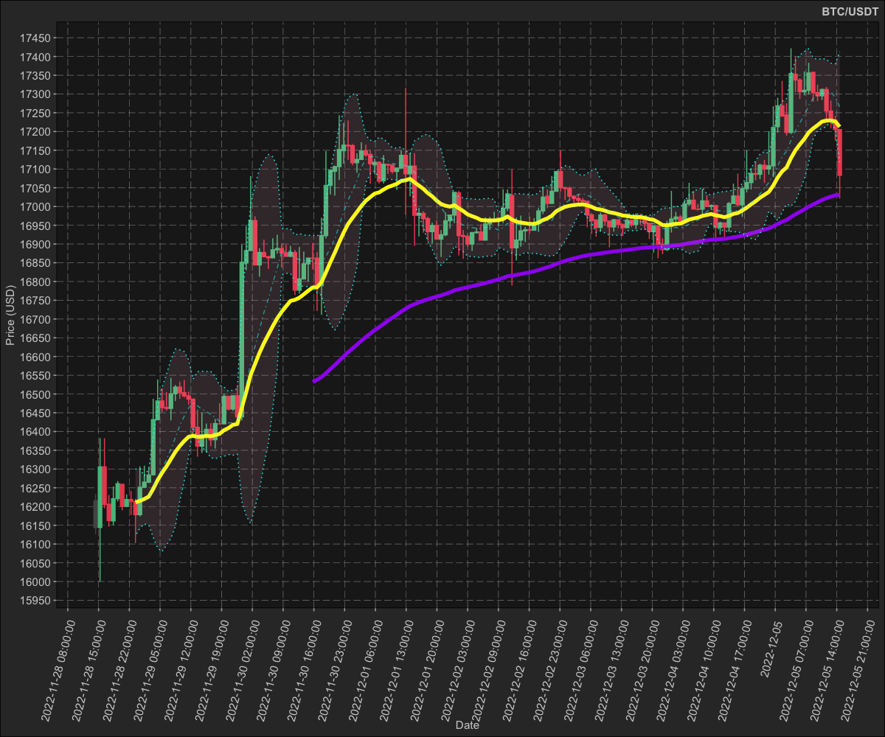
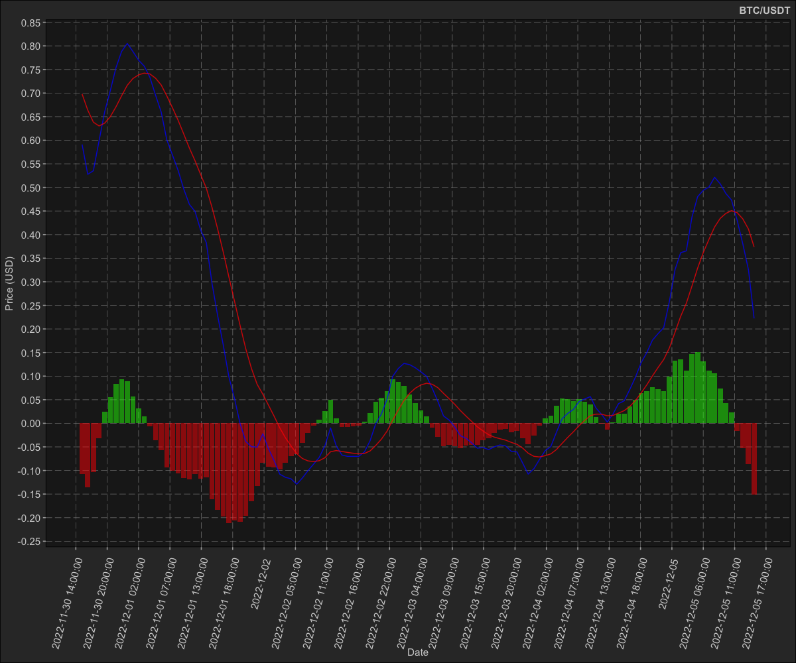
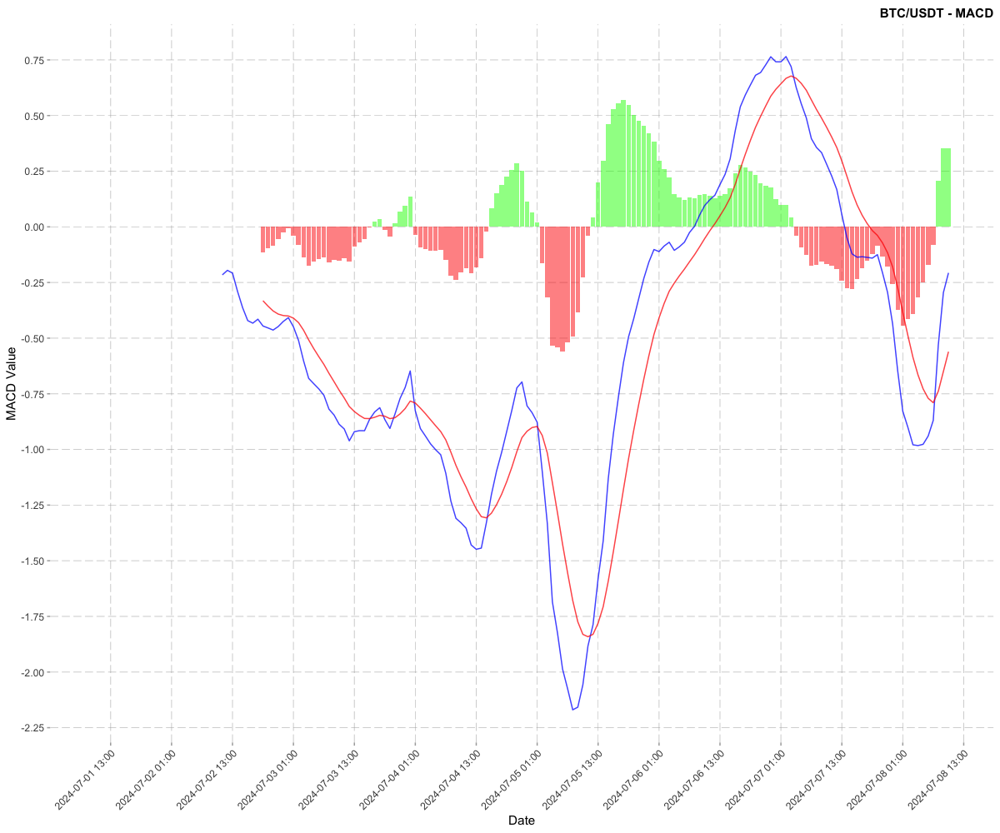

dmplot
Dereck’s library for plotting financial and time series data as well helper functions for plotting in the style of Dereck.
Installation
You can install the development version of dmplot using:
# install.packages("remotes")
remotes::install_github("dereckmezquita/dmplot")Financial data
You must provide a function which calculates these indicators and returns a list which can then be plotted.
Get financial data
Shown here kucoin is a package for interacting with the KuCoin api. You can use any source of financial data as long as you pass the variables to the stat correctly.
ticker <- "BTC/USDT"
dt <- kucoin::get_market_data(
symbols = ticker,
from = "2022-11-28 15:29:43 EST", # lubridate::now() - lubridate::days(7),
to = "2022-12-05 15:29:31 EST",# lubridate::now(),
frequency = "1 hour"
)
dt
#> symbol datetime open high low close volume
#> <char> <POSc> <num> <num> <num> <num> <num>
#> 1: BTC/USDT 2022-11-28 15:00:00 16215.3 16233.6 16126.0 16144.1 327.8979
#> 2: BTC/USDT 2022-11-28 16:00:00 16144.1 16382.6 16000.0 16305.9 837.5801
#> 3: BTC/USDT 2022-11-28 17:00:00 16305.9 16382.0 16195.4 16205.4 507.8351
#> ---
#> 167: BTC/USDT 2022-12-05 13:00:00 17254.5 17282.5 17208.1 17229.7 105.2655
#> 168: BTC/USDT 2022-12-05 14:00:00 17229.8 17241.4 17175.1 17205.2 140.4375
#> 169: BTC/USDT 2022-12-05 15:00:00 17205.1 17205.1 17021.6 17083.0 504.9158
#> 1 variable(s) not shown: [turnover <num>]Note a demonstration dataset is included in the demo/data/ directory.
Plot financial data
Here I demonstrate how to use the stats for plotting financial data along with the theme functions included in this package:
dmplot::stat_candlesticks()dmplot::stat_bollingerbands()dmplot::stat_movingaverages()dmplot::stat_macd()
And the theme functions for styling:
## ------
# redifine our function to return a list
ema <- function(x, n, wilder = TRUE) {
return(as.list(as.data.frame(TTR::EMA(x, n = n, wilder = wilder))))
}
bb <- function(close, n = 2, sd = 2) {
return(as.list(as.data.frame(TTR::BBands(close, n = n, sd = sd))))
}
# calculate the short and long moving averages
dt[, ema_short := ema(close, n = 10, wilder = TRUE)]
dt[, ema_long := ema(close, n = 50, wilder = TRUE)]
# calculate the bollinger bands
dt[, c("bb_lower", "bb_mavg", "bb_upper", "bb_pct") := bb(close, n = 10, sd = 2)]
## ------
# plot
p <- dt |>
ggplot2::ggplot(ggplot2::aes(
x = datetime,
open = open,
close = close,
high = high,
low = low,
group = symbol
)) +
## ------------------------------------
dmplot::stat_candlestick() +
## ------------------------------------
# moving averages
dmplot::stat_movingaverages(ggplot2::aes(
short = ema_short,
long = ema_long
), alpha = list(mavg = 0.5)) +
dmplot::stat_bollingerbands(ggplot2::aes(
ymin = bb_lower,
mavg = bb_mavg,
ymax = bb_upper
), colour = list("pink", "cyan", "cyan")) +
## ------------------------------------
ggplot2::scale_x_continuous(n.breaks = 25, labels = \(x) {
lubridate::floor_date(lubridate::as_datetime(x), "hours")
}) +
ggplot2::scale_y_continuous(n.breaks = 25) +
ggplot2::labs(
title = ticker,
x = "Date",
y = "Price (USD)"
) +
dmplot::theme_dereck_dark() +
ggplot2::theme(
axis.text.x = ggplot2::element_text(angle = 75, vjust = 0.925, hjust = 0.975),
panel.grid.minor = ggplot2::element_blank()
)
p
Plotting the MACD (moving average convergence divergence) indicator:
macd <- function(x, s = 12, l = 26, k = 9) {
return(as.list(as.data.frame(TTR::MACD(x, s, l, k))))
}
# calculate the macd
dt[, c("macd", "macd_signal") := macd(close, s = 12, l = 26, k = 9)]
dt[, macd_diff := macd - macd_signal]
na.omit(dt) |>
ggplot2::ggplot(ggplot2::aes(x = datetime)) +
## ------------------------------------
dmplot::stat_macd(ggplot2::aes(macd = macd, macd_signal = macd_signal, macd_diff = macd_diff)) +
## ------------------------------------
ggplot2::scale_x_continuous(n.breaks = 25, labels = \(x) {
lubridate::floor_date(lubridate::as_datetime(x), "hours")
}) +
ggplot2::scale_y_continuous(n.breaks = 25) +
ggplot2::labs(
title = ticker,
x = "Date",
y = "Price (USD)"
) +
dmplot::theme_dereck_dark() +
ggplot2::theme(
axis.text.x = ggplot2::element_text(angle = 75, vjust = 0.925, hjust = 0.975),
panel.grid.minor = ggplot2::element_blank()
)
Now let’s do the same plot in a light theme:
p + dmplot::theme_dereck_light() +
ggplot2::theme(
axis.text.x = ggplot2::element_text(angle = 75, vjust = 0.925, hjust = 0.975),
panel.grid.minor = ggplot2::element_blank()
)